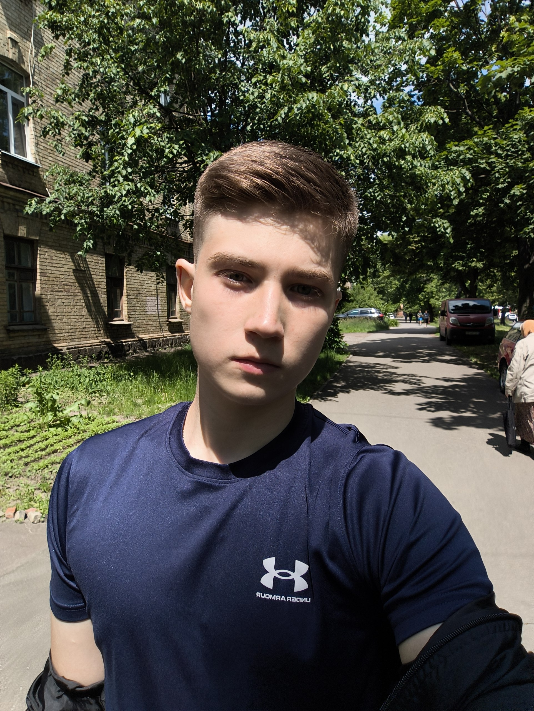
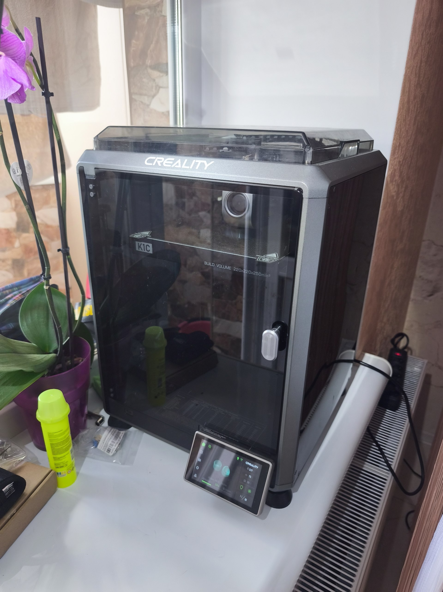
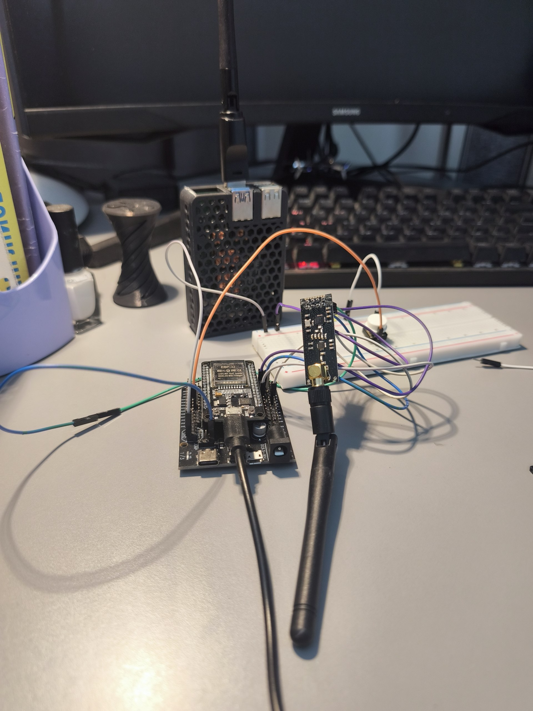

01
Програмування
Пишу логічний і надійний код для реальних задач.
- C++ системне програмування та алгоритми
- Python автоматизація і робота з даними
Ну поїхали

Код, дроти й дизайн. Звучить як початок поганого жарту. Власне, так і є...
def make_idea_real(idea):
# start small, think deep
prototype = build(idea)
return prototype01 / Про мене
Я студент Київського політехнічного інституту імені Ігоря Сікорського. Навчаюся на другому курсі за спеціальністю F2 «Інженерія програмного забезпечення». Маю працюючий проект - python telegram bot (@Microsoft_Canendar_Bot) Цей бот парсить інформацію з microsoft teams і попереджує однокурсників в загальному чаті про початок пари. Також є можливість переглянути пари через самого бота. Маю власний не до сайт drashpul.me на власному домені. Працюю з такими мовами як python, c++, html, css. Маю досвід з програмування плат типу ESP-32 Rasberry Рі 4В. Вмію взаємодіяти з операційними системами по типу linux, Ubuntu.
Мої проєкти вживу
Код стає цікавішим, коли
npm install триває довше за твоє навчання


02 / Що я вмію
Речі, з якими я
працю.
Пишу логічний і надійний код для реальних задач.
Створюю чисті інтерфейси, які добре працюють на будь-якому екрані.
З'єдную фізичний світ із цифровим через маленькі розумні пристрої.
Перетворюю цифрову модель на фізичний прототип.
Розуміюся на системах, налаштуванні середовища та не боюся терміналу.
03 / Контакти